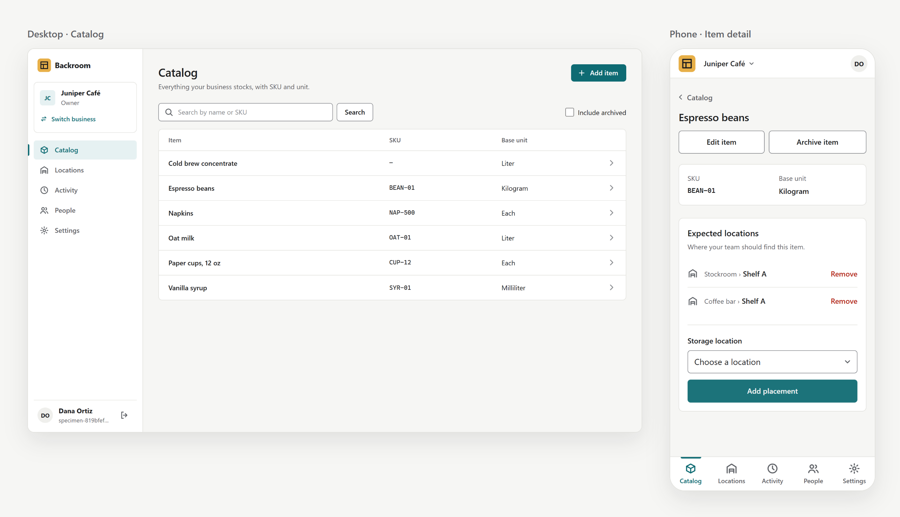

Design system 2.0 · Component reference
In the product
Catalog on desktop, item detail on a phone. Screenshots of the running app.

Color
Neutrals do most of the work inside the workspace. Coral marks actions, folders and the current place, and fills the navigation rail.
Canvas--bg #F4F5F7
Surface--surface #FFFFFF
Sunken--surface-sunken #EEF0F3
Text--text #111827
Muted text--text-muted #6B7280
Control edge--border-strong #80868F
Accent--accent #C2331F
Accent soft--accent-soft #FDECE8
Sidebar rail--sidebar-bg #D63F2A
Success--success #1F6B3A
Warning--warning #8A4B0F
Danger--danger #8F1D3F
Type
System UI fonts, monospace for codes. Nothing smaller than 12 px.
Buttons
One primary per view. Danger only confirms a destructive action. Labels are verb + noun.
Fields and search
Label above, hint below, error below the hint. Inputs are 16 px on touch screens so iOS doesn't zoom.
Another item already uses this SKU.
Badges and notices
Always words, never color alone. Ordinary active items get no badge.
Data table
Whole row opens the record. Under 640 px each row restacks into name, then SKU · unit. Resize the window to see it.
| Item | SKU | Base unit | Open |
|---|---|---|---|
| Espresso beansBEAN-01 · Kilogram | BEAN-01 | Kilogram | |
| Oat milkOAT-01 · Liter | OAT-01 | Liter | |
| Seasonal syrupArchivedNo SKU · Milliliter | No SKU | Milliliter |
Navigation
Coral sidebar rail at 1024 px and wider, with a darker pill for the current page; white bottom tab bar below that. Both come from one destinations list, filtered by role.
Dialog
Confirmations ask the question in the title and repeat the verb on the button. Focus starts on Cancel. On phones this opens as a bottom sheet.
Archive Espresso beans?
Its expected locations are removed from active use. You can still find it with Include archived, and its history stays available.
Empty state
Tell people what to do next, or where content will come from if they can't add it.
No items match “espresso”
Check the spelling, or search by SKU instead.